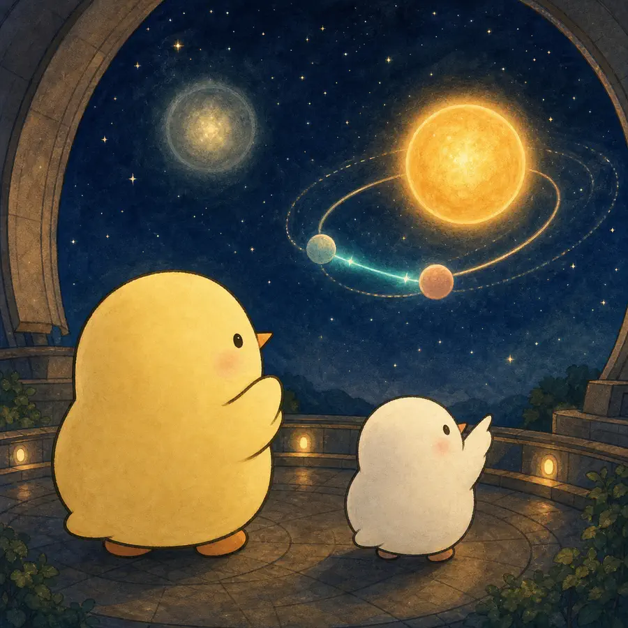
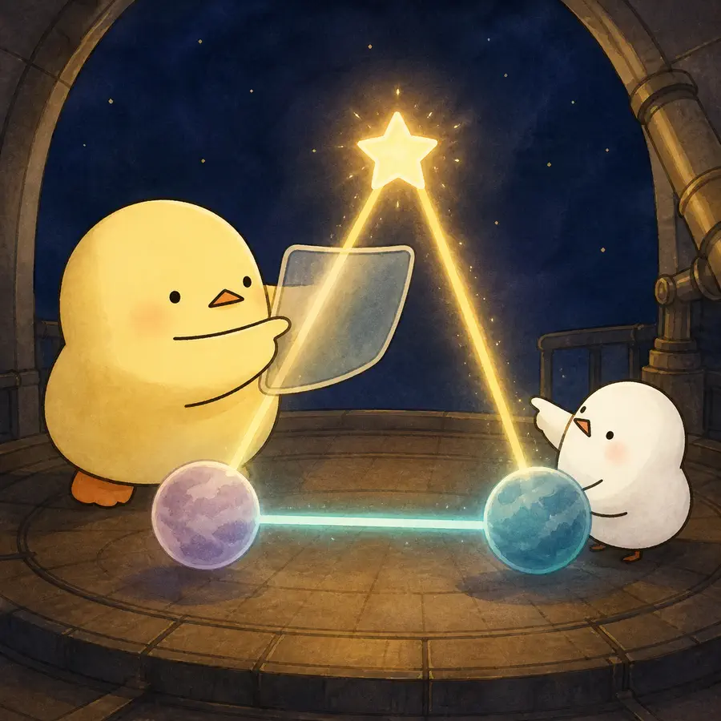
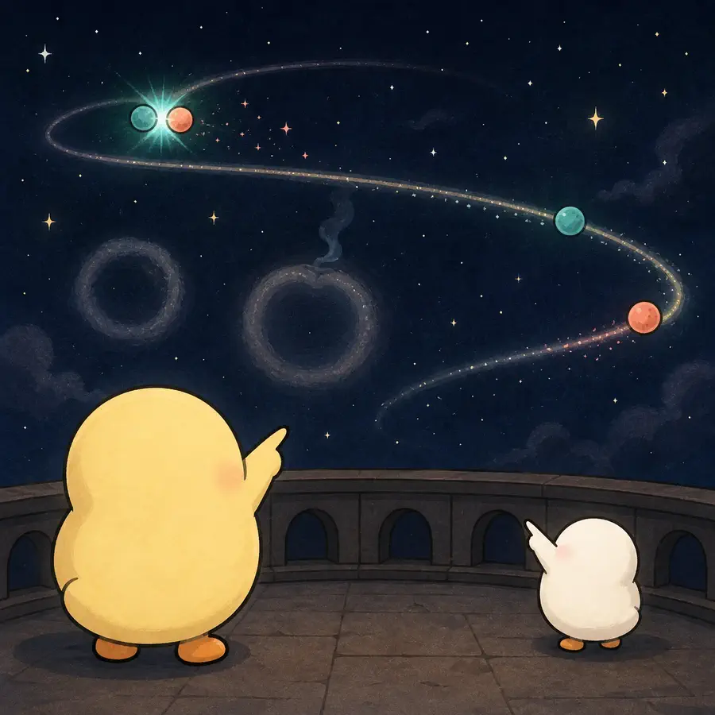
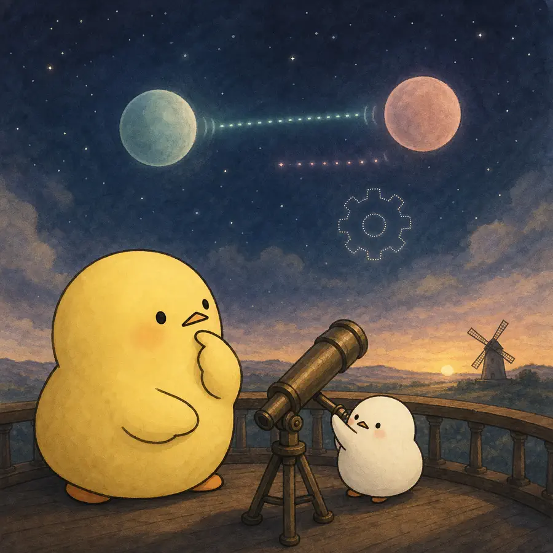

ILLUSTRATED OVERVIEW
부모의 죽음 뒤 형제자매 관계는 가까워질까?
첫 번째 부모의 죽음과 두 번째 부모의 죽음은 형제자매 접촉에 다른 궤적을 남겼습니다. 짧은 전환과 긴 지속을 분리해 봅니다.
옆으로 넘겨 4컷 보기
-

첫 부모의 사망 해에는 형제자매의 대면·전화 접촉이 증가했고 남은 부모가 살아 있는 동안 비교적 지속됐다.
-

남은 부모와의 접촉·지원은 첫 사망 뒤 형제자매 접촉 증가를 부분적으로 매개했다.
-

두 번째 부모 사망 뒤 접촉은 잠시 늘었다가 장기적으로 사망 전보다 낮아졌고 갈등도 점차 감소했다.
-

갈등 감소는 관계 개선보다 접촉 자체의 쇠퇴일 수 있으며, 관계유지자 해석과 인과방향은 확정되지 않았다.